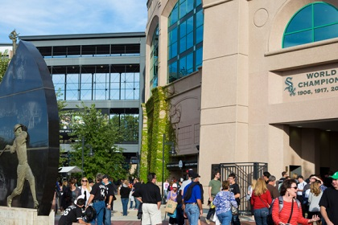

Bridgeport
Bridgeport is home to the Chicago White Sox, one of Major League Baseball’s oldest franchises. The team won the World Series in 2005,
led by Ozzie Guillén, the first Latino manager in history to win a World Series. (The Sox also won the World Series in 1906 and 1917.)
If you’re catching a game, arrive a few hours early — you’ll want to make time to hangout at the tailgate party that takes over the stadium’s
parking lot before each game. Along with baseball fever, you’ll find a hotbed of arts and history in Bridgeport. Spots to visit include the
Bridgeport Art Center and Zhou B Art Center, which have both helped build Bridgeport’s vibrant arts scene. The neighborhood is also home to
the Chicago Maritime Museum, which includes more than 6,000 objects that commemorate Chicago’s maritime past.
Bucktown / Wicker Park
These artsy neighborhoods always have something cool going on. Wicker Park and Bucktown are one of the
hippest and trendiest neighborhoods in Chicago -- if not the country. Filled with activities that draw
shoppers hunting for unique finds, foodies looking for the trendiest eats, and bar hoppers searching for
late-night buzz. In 1980s, it began to evolve into the artistic community that it is known as today. As the
area became more popular, rents began to climb, pushing people south to Wicker Park. Wicker Park is known
for the unusual rehabs, such as a converted firehouse and "pod" house that was named the grand prize
architectural winner for a "small spaces" exhibit.
Highlights: A good way to see the area is on the 606, a repurposed rail line that gives you an elevated
view of four distinctive Chicago neighborhoods: Wicker Park, Bucktown, Humboldt Park, and Logan Square.
You’ll find walkers, joggers, bikers, public parks, art installations, overlooks, and more all along the
2.7-mile stretch. Try an artisanal drink at the Violet Hour, the semi-hidden bar that started the craft
cocktail craze in Chicago. Get trapped on an ‘L’ train at Escape Artistry escape rooms. Head to the rooftop
bar in The Robey hotel to sip piña coladas and take in 180-degree views of the city skyline. The Bristol, a
popular Bucktown restaurant has matured since it's opened, and its cocktail program is stronger than ever and
always-changing its daily specials. The brunch, too, is worth a visit for the outstanding Bloody Mary and chicken
and biscuits. Club Lucky, one of the best restaurants in Wicker Park, known for its old-school, family-style Italian
menu. The owners have gone out of their way to restore the original cocktail-culture look of the ’50s. During
the late hours, it's known for the lounge vibe of Sinatra standards and signature martinis.
Chinatown
Chicago’s century-old Chinatown transports you straight to eastern Asia. At the heart of Chinatown's
lively business district are Cermak Road and Wentworth Avenue. Offerings there include an extensive roster
of shops, cafes, dim sum spots and teahouses. Chinatown Square outdoor mall has similar attractions; see if
you can spot your sign among the 12 Chinese Zodiac statues located in the middle of the mall. The
Chinese-American Museum has exhibits about the history of the neighborhood. The Nine-Dragon Wall is a
reproduction of the 15th-century mural of the same name in Beijing.
Highlights: Snap a photo with Chinatown’s Guardian Lions at the entrance of Chinatown Square. Watch the
Chinatown Lunar New Year Parade, part of the city’s Chinese New Year celebrations every February. Grab a
traditional mooncake at Chiu Quon, the neighborhood’s oldest bakery.
Gold Coast / Old Town
The Gold Coast is known for its charming homes on picture-perfect streets. With its historic mansions,
high-end boutiques, historic hotels, and restaurants favored by celebrities past and present, all give this
neighborhood its star power. Old money and stunning lake views characterize this neighborhood. The Gold
Coast's main commercial center is Oak Street, the "Rodeo Drive" of the Midwest. Hermes, Versace and Gucci
clothing stores mingle with four-and five-star restaurants offering outdoor seating in the summer. During
summer, Rush Street Concerts showcase live performances for an hour at the landmark St. James Cathedral. The
Astor Street District features rows of 19th-century homes designed in various historical revival styles.
Among the neighborhoods’s other notable buildings are the Charnley-Perksy House, designed by Louis Sullivan
and Frank Lloyd Wright, and the Former Playboy Mansion, legendary for Hugh Hefner’s star-studded parties.
For an out-of-the-ordinary museum experience, head to the International Museum of Surgical Science, the only
museum of its kind in America. It’s housed in a stunning lakefront mansion, and features a tiny gift shop
filled with fabulously quirky finds.
Highlights: Experience a new kind of steakhouse at ultra-modern Maple & Ash, where steaks are seared over a live wood
fire, or dine in the light-filled courtyard of a historic building at 3 Arts Club Café. Somerset is one of
the best restaurants in the entire city. The American menu is versatile enough to please everyone. The space
is upscale, with non-kitschy nautical touches, and the service is great.
Hyde Park
Hyde Park was the site of the Chicago World’s Fair of 1893. One of its most famous residents is the 44th
President Barack Obama. Here, you'll find several of the country's more prestigious institutions. The
University of Chicago is a private research university, founded in 1890 and renown for producing over 87 Nobel
Prize laureates. It is ranked among the top universities in the world by major education publications. On
the campus, you’ll find striking Gothic architecture, the free Smart Museum of Art, the Oriental Institute,
the Court Theatre, and more. The university is known for world-changing discoveries, like the world’s first
artificial nuclear reactor that was built below the school’s football stadium. The Museum of Science and
Industry (MSI), is the largest science museum in the Western Hemisphere, with more than 2,000 exhibits —
from U-boats and airplanes to coal mines and tornados. It’s also housed in one of the last remaining buildings
from the Chicago World’s Fair, the former Palace of Fine Arts from the 1893 World's Columbian Exposition.
Initially endowed by Julius Rosenwald, the Sears, Roebuck and Company president and philanthropist, it was
supported by the Commercial Club of Chicago and opened in 1933 during the Century of Progress Exposition.
The Chicago Blues legend Muddy Waters played the standing-room-only gig with the Rolling Stones at the
Checkerboard Lounge in 1981. It’s home to one of the most iconic masterpieces in American architectural
design — Frank Lloyd Wright’s Robie House, a UNESCO World Heritage Site. Admire the striking facade or take
a tour of the meticulously restored interior.
Highlights: If you didn’t already know about it, you may have heard of Valois restaurant because of
President Obama - it’s famous for being one of his favorite breakfast spots in Hyde Park. There’s even a sign
letting you know what he likes to order. Breakfast is one of the favorite things to eat here. Just remember
that it’s cash only. Sip on cocktails around a brick hearth at ultra-sleek The Promontory. Head to Jackson
park to see the Garden of the Phoenix, a hidden Japanese garden, and SKYLANDING, Yoko Ono’s first permanent
U.S. public art installation.
Lincoln Park / Lakeview
In the 1800s, this neighborhood was mostly swampland and forest. Today, it is one of the most fashionable
places to live in Chicago. It attracts singles in their 20s and 30s, many of whom stay to start their families
here. The neighborhood is home to two private schools with great reputations for the education they offer
kids. The community is very much like a college town within the big city, with a large variety of shopping,
restaurants and nightspots all in close proximity. What really sets Lincoln Park apart is the area’s namesake
park. That’s where you’ll find lushly landscaped grounds (with more than 1,200 acres), the Lakefront Trail,
Lincoln Park Zoo, Lincoln Park Conservatory, North Avenue Beach, Peggy Notebaert Nature Museum, Chicago
Museum, Nature Boardwalk, Farm in the Zoo, Theater on the Lake — there’s enough here to spend an entire day
(or week) exploring. The neighborhood’s young energy is fed by the 3,000 students who attend DePaul University’s
oldest and largest campus in the heart of Lincoln Park. Also, the neighborhood offers an abundance of outdoor
activities, including bike trails, jogging paths and athletic fields. A great place for the bargain-hunter;
Lincoln Park is headquarters to the ultimate resale shop, Millionaire Rejects. North Pond restaurant made the
list of six best romantic spots in Chicago. It is situated within the grounds of Lincoln Park, at the edge of
a pond overlooking the dramatic Chicago skyline, and can easily claim the loveliest setting in the city.
Its structure was originally built in 1912 as a warming shelter for ice skaters, and has been redesigned
according to the Arts and Crafts tradition. Drawing inspiration from the local market, Chef César Murillo
utilizes exceptional ingredients at the height of their season. The path from earth to plate remains clear
and our cuisine reflects the decor of the dining room – layers of subtle craft beneath a simple decorative
style.
Highlights: Find a moment of zen at the tranquil Alfred Caldwell Lily Pool. Sip on cocktails at the
all-seasons J. Parker rooftop, with stunning views of Lake Michigan. Listen to Chicago-style blues at
legendary Kingston Mines, where you’ll find live music till 4 a.m. every night of the week. For a
once-in-a-lifetime experience, reserve a table at ultra-acclaimed Alinea. It’s often named one of the best
restaurants in the world, thanks to its avant-garde tasting menus and interactive presentation.
The Loop
The Loop is the heart of the city and it’s bursting with iconic Chicago attractions, including historic
architecture, river cruises, Millennium Park, the Chicago Riverwalk, a vibrant theatre district, incredible
dining, shopping along State Street…and that’s just for starters. As Chicago’s official downtown area, the
Loop is celebrated for its dynamic architecture and big city buzz. Visit this website's Architecture page
for some of my favorite architectural buildings. The Loop is also home to the award-winning Chicago Riverwalk,
a pedestrian-only pathway lined with great waterfront restaurants, the McCormick Bridgehouse & Chicago River
Museum, and the mind-blowing digital art display Art on the MART. On the Millennium Park Campus, you'll find
the iconic Cloud Gate (aka “The Bean”), Crown Fountain, peaceful Lurie Garden, and the Jay Pritzker Pavilion
that hosts legendary music festivals like the Chicago Blues Festival, Chicago Jazz Festival, and a free
summer music series and film series. Right next door, you can rock climb, skate, and play at the Maggie Daley
Park. The historic Art Institute of Chicago, one of the top museums in the world according to TripAdvisor,
is also located here. It’s one of the oldest and largest art museums in the country, home to one of the most
impressive collections of Impressionist art in the world. Nearby, the Chicago Cultural Center is a stunning
landmark filled with free exhibits, art, and performances. Gaze up, and you'll see the largest Tiffany
stained glass dome in the world. At Skydeck in Willis Tower (formerly Sears Tower), you can step out onto
The Ledge — a glass box that extends outside the building, 1,353 feet up. Last but not least, the Loop is
where you’ll find Chicago’s celebrated Theatre District, buzzing with Tony Award-winning shows, world
premieres, and glittering marquees at the likes of the Auditorium Theatre, the Cadillac Palace Theatre, and
the Nederlander Theatre.
Highlights: Kayak the skyscraper canyon formed by the Chicago River. Enjoy free classical concerts
surrounded by architectural greatness at the Chicago Cultural Center. Explore the city’s underground tunnel
system with a Pedway tour.
The Magnificent Mile
The Magnificent Mile is one of the most famous shopping areas in the world — home to an array of popular
stores, restaurants, attractions, and architecture all on one iconic street. The Water Tower Place, houses
floors upon floors of only-in-Chicago stores, like the original American Girl Place. While you’re browsing,
take a moment to look upwards towards Chicago’s skyline-defining 875 N. Michigan (formerly the John Hancock
Center). This is where you’ll find one of the city’s ultra-unique, thrill-riding observation decks. 360
CHICAGO gives you stunning panoramic views of the city and lakefront from 1,000 feet up, while TILT literally
tilts you out and over the city from the 94th floor. Follow up the adrenaline rush with a little relaxation,
a cocktail, and a bite at the Signature Room, located one floor up on the 95th with more stunning views. Head
for high tea at The Drake hotel’s historic Palm Court. A few of The Magnificent Mile’s many architectural
gems include the Tribune Tower, whose facade incorporates more than 150 fragments from historic buildings
and sites, like the Winter Palace in Beijing and the Great Pyramid in Giza. Across the street, you’ll see
the iconic Wrigley Building and its gleaming white facade. From there, head down to the Chicago Riverwalk to
board a bright yellow water taxi — a favorite mode of transport for Chicagoans.
Highlights: Browse the free City Gallery inside the historic Water Tower, one of the only buildings to
survive the Great Chicago Fire. See a show at Tony Award-winning Lookingglass Theatre Company, housed in the
Water Tower’s Pumping Station. See if you can jump as high as Michael Jordan at the interactive Chicago
Sports Museum.
River North
River North was uncharitably called a slum until real estate developer Albert Friedman began leasing out
buildings to art galleries, photographers and agencies, all looking for economical office and display space.
The transformation has been exceptional. Today, it has the greatest concentration of art galleries in the
country -- over 100 clustered in the gallery district on Superior and Huron -- trailing only York. The
world's largest commercial building, the Merchandise Mart, at 4.2 million square feet, is here (Google Inc.
is a tenant). The Trump Tower on Wabash, is popular home for athletes and celebrities (Chicago Bulls point
guard Derrick Rose bought a condo).
Roscoe Village
German and Swedish workers settled in what is now Roscoe Village in the late 19th century when it was
between two industrial areas on its eastern and western borders. Tough economic conditions during the Great
Depression closed many factories and businesses in the area, and development slowed. Today, this quaint
community is very popular with young families. The neighborhood’s main thoroughfare, Roscoe Street, is lined
with shops with colorful awnings, small restaurants and trees. Vintage brick walkups and well-maintained
frame houses with front porches help maintain the atmosphere of this family-oriented community. Along with
the newer designer boutiques, the residents of Roscoe Village can enjoy the largest concentration of antiques
stores in the Midwest, located along the neighborhood’s Southern border (between Addison Street south to
Belmont Avenue, from Western Avenue east to Lincoln Avenue).
Highlights: One of many fantastic places to eat, is Kitsch’n on Roscoe. It draws large crowds with its
timeless diner fare in the kitsch of the seventies and candy-colored eatery. Rays of retro sunshine pour
from the flower power interior: Bright-orange Formica tables sit on linoleum floors, and the yellow walls
are dotted with memorabilia from Me Decade stars like Gumby and David Cassidy. The menu playfully follows
suit with items such as “Green Eggs and Ham” (spinach pesto, scallions, smoked ham, Texas toast and hash
browns).
Streeterville
The most spectacular apartment space in the country debuted in Streeterville. The people who live in
Streeterville are moving up, literally, with taller highrises being built every year. Nicknamed the
“platinum coast”, apartment buildings and condos in this area come with more than the usual amenities.
Some come attached to banks, athletic clubs, convenience stores, hotels and in one case -- the
Residences at River East Center -- a 21-screen movie theater and bowling alley. Marisol, an art-centric
restaurant, is named for the artist who gave the Museum of Contemporary Art (MCA) its first piece. This
chic MCA dining room showcases elevated New American fare from Lula Cafe’s Jason Hammel alongside house
cocktails, with lunch, brunch and a to-go counter on the way. The modern, art-inspired space boasts a white
domed ceiling, a mural by Chris Ofili (who also designed the room) and pops of primary colors throughout.
Ukrainian Village
The Ukrainian Village is a very eclectic neighborhood containing low-rises, single-family homes and older
Victorian homes that are inhabited by families who have lived there for decades. Chic boutiques and trendy
nightspots continue to pop up in this west town village south of Wicker Park. Decorated with beautiful,
ornate churches, the neighborhood has preserved the cultural heritage brought to it by German, Polish
and Ukrainian immigrants in the late 19th and early 20th centuries. Although most of its residents are
not of Ukrainian descent, the Ukrainian food here is some of the best in the city, and visitors can still
hear the language spoken on backyard stoops and in neighborhood businesses.
Highlights: Soule, with its upbeat atmosphere and delicious soul food will comfort you whether or
not you actually need comforting. This place is small and gets really busy, so you might need to wait
for a table. But just wait at Cleo’s next door, or use that time to pick up some wine and beer, since
Soule is BYOB. All Together Now is a useful all-day spot that is both a restaurant and a market,
with a bar that works for dining solo and/or getting some work done, and also some tables for small groups.
The food is delicious, and this place works well for everything from a casual weeknight dinner to just
picking up some wine and cheese.
Uptown Chicago
Uptown is where Chicago’s rich history and international diversity intersect. The neighborhood is known
for its vibrant music scene, vintage architecture, and amazing global cuisine. This neighborhood was a booming
entertainment district in the 1920s and 1930s, with a thriving jazz scene that took off during Prohibition. The area’s
recent renaissance has seen a number of its old-school movie houses and Art Deco buildings restored to their
former glory. Undoubtedly, the Green Mill is the place to be when you’re here. This 100-year-old jazz club
still has the same sultry feel of its Prohibition heyday. Grab a seat in the booth at the end of the bar —
it was the regular spot for famous gangster Al Capone. Nearby, take your pick from indie rock, salsa concerts,
wrestling events, and more at The Riviera or Byline Bank Aragon Ballroom. For a deep dive into history, visit
Graceland Cemetery, a Victorian oasis of art, architecture, and landscape design that’s one of the city’s
hidden gems. On Argyle Street and the surrounding blocks, you’ll find a treasure trove of Asian eateries,
with restaurants serving up Peking duck, sushi, traditional dim sum, banh mi, and pho.
Highlights: Snack on international street food at the Argyle Night Market (July – September). Catch
a show at the Black Ensemble Theater that’s guaranteed to have you up out of your seat. Take your pup out
for fun in the sun at Montrose Beach dog beach.
Wrigleyville
Wrigleyville is home to historic Wrigley Field, the second oldest ballpark in the country. Whether or not you’re
a sports fan, you can’t help catching a little Cubs fever while you’re here. Wrigley Field is famous for its ivy-covered
outfield walls, manual scoreboard, and lively atmosphere. It’s also home to the Chicago Cubs, famous for their 108-year
journey from lovable losers to 2016 World Series Champions. The area around the stadium is known as Wrigleyville, and
it’s bursting at the seams with sports bars, souvenir stalls, and die-hard Cubs fans. Walk up and down Clark Street
to stop into the area’s many bars and restaurants that usually filled with locals, even when it’s not baseball season.
Right outside the stadium, you’ll find the open-air Gallagher Way. It’s a popular gathering spot for neighbors, fans,
and visitors all year long. A slew of events go on here, including farmers markets, an outdoor concert series,
film screenings, and a holiday winter wonderland.
Highlights: Take an official Wrigley Field Tour for a peek into over a century’s worth of Chicago baseball history.
Enjoy a rare whiskey pour at Mordecai inside Hotel Zachary at Gallagher Way. Snag a game-day perch on rooftop bleachers
at Wrigley Rooftops.